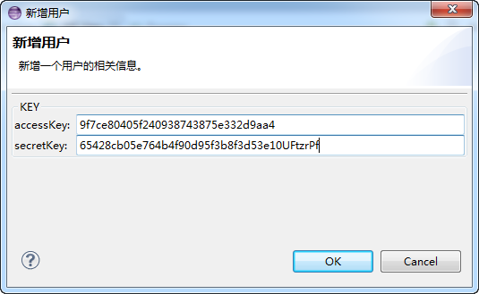
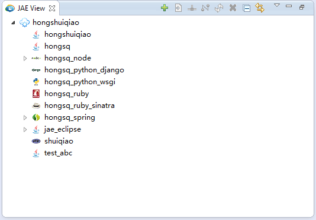
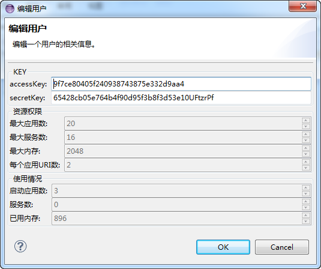

1) 点击JAE视图上的新增用户按钮（ ）弹出如下对话框，真写完用户的accessKey和secretKey后，点击OK完成新增用户。

2) 连接成功后，在视图上会显示出用户节点。展开后可以看到该用户下的所有应用

在连接状态通过右键编辑用户菜单，可以修改key，同时可以查看用户的个人信息。

用户可以通过右键的删除菜单或工具栏删除按钮删除一个用户。这里删除用户只是不在JAE视图中操作，并不会真正从京东云擎中删除该用户。